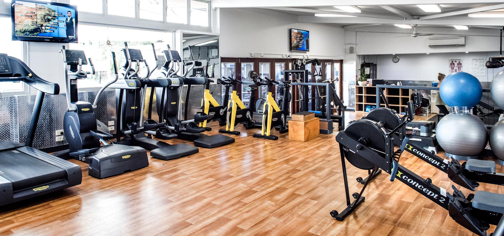

Shane's Hobbies
Despite his busy schedule, Shane finds plenty of ways to unwind and enjoy his free time. One of his favorite pastimes is playing video games with a large group of friends, often convincing his wife to join in on the fun. He also loves hitting the gym with his wife, which not only gives him a sense of accomplishment but also serves as a healthy and rewarding hobby. To truly relax, Shane enjoys meeting up with friends at local breweries once or twice a month. They kick back with some card games before heading out to play a few rounds of pool, making for a perfect way to recharge.
